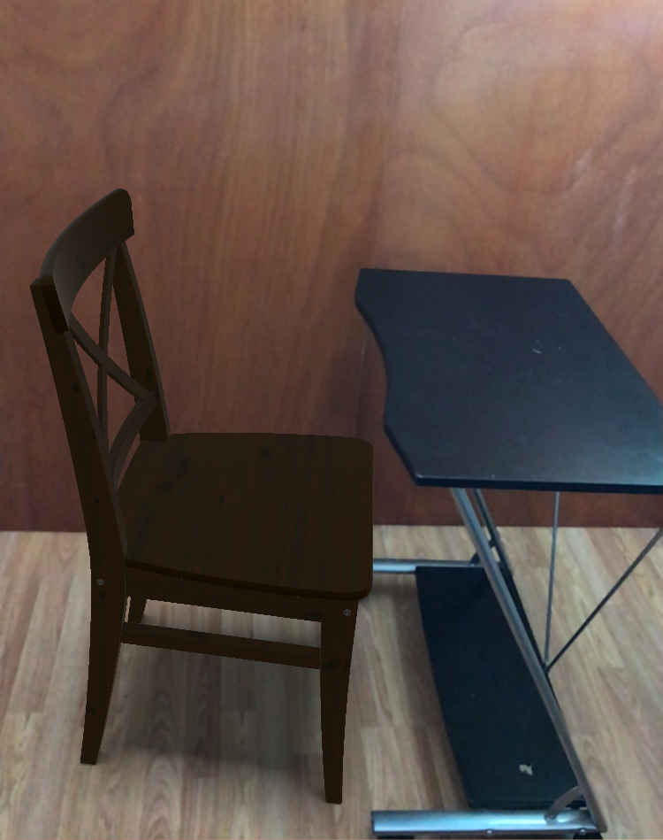
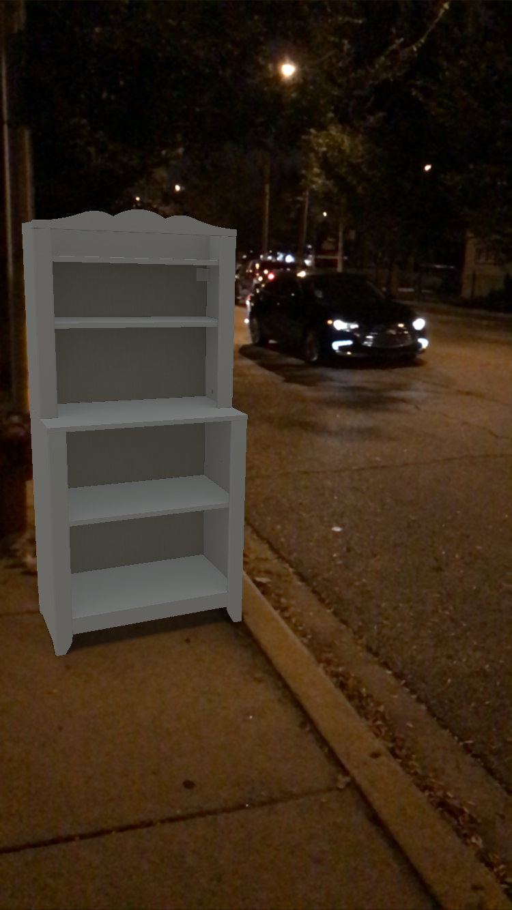

For this homework, I downloaded the iOS AR app ‘IKEA Place’ and tried it out in a couple of places. First, I placed a virtual chair in front of a table in my room, the virtual chair fit with the environment and seemed almost real. After that, I placed a cupboard on the sidewalk out in the street; I took pictures of both, here are the pictures:


These kind of AR applications where the user places some object in an environment can be used in a variety of situations, these are the ones that I could think of:
+ Urban planning: Augmented reality applications can be used during the renovation of existing public landmarks such as parks/zoos where the architect can place various structures such as fountains, benches or statues in the environment and visualize how the prospective changes might affect the existing setup. Another application would be in the design process while planning a city – since building the actual infrastructure is an extremely costly and time taking process, trying the alternate placements of buildings/roads in the actual site beforehand would provide the planner with better insights and would reduce the probability of finding inconsistencies late in construction.
+ Interior design: This is one of the areas that really fits this paradigm and is actively being explored. These kind of AR applications can be used for a variety of uses in interior design – placing virtual furniture/objects at various locations in the house and make decisions as to whether the style of object fits with the décor or if the available space is enough for the new object. Alternate placements for the object can be explored without actually moving anything physically.
+ AR can be used to create virtual multiplayer games using motion capture; the movements of each player can be tracked, applied to respective virtual models and shown to the other players to simulate having all of them together in the same location.
+ Another application would be in the online shopping industry where the user can try out jewelry or clothes virtually before buying them. This can also be used in hair salons where the customer can try out multiple hairstyles before deciding on one.
+ Having the ability to place virtual objects/things around people is fun – we can take advantage of this feature in the form of photo filters.
© Sai Priya Jyothula. All rights reserved.